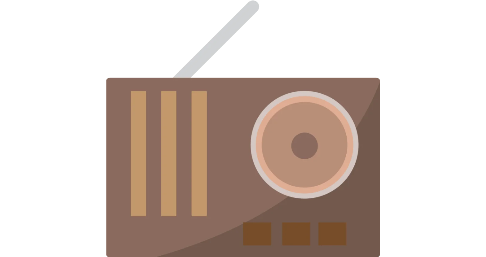

Welcome
Skip to dashboard
Audience Metrics Dashboard

What best describes you?
I'm a new user.
Or, I just need a refresher of the content. Take me to the orientation.
→
I'm a returning user.
I feel comfortable with the dashboard. Take me there.
→